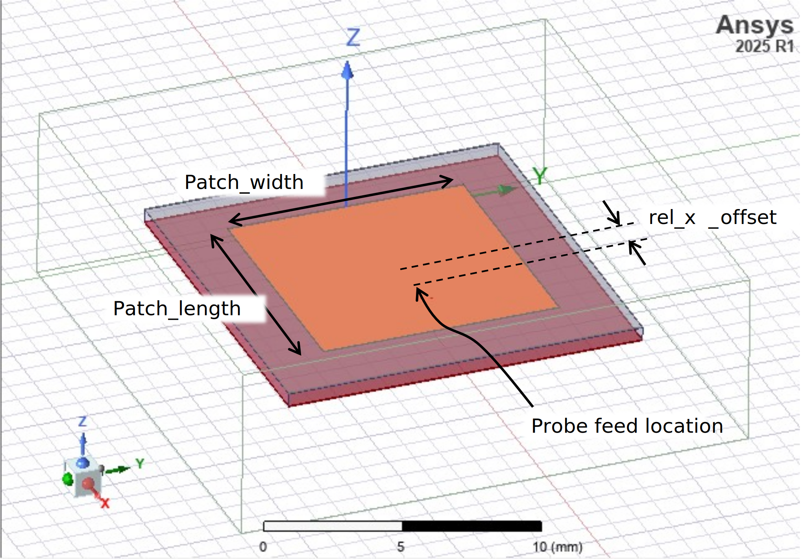

Download this example
Download this example as a Jupyter Notebook or as a Python script.
Probe-fed patch antenna#
This example demonstrates how the Stackup3D class can be used to create and analyze a patch antenna in HFSS.
Note that the HFSS 3D Layout interface may offer advantages for laminate structures such as the patch antenna.
Keywords: HFSS, terminal, antenna., patch.
Perform imports and define constants#
Perform required imports.
Prerequisites#
Perform imports#
[1]:
import os
import tempfile
import time
import ansys.aedt.core
from ansys.aedt.core.modeler.advanced_cad.stackup_3d import Stackup3D
Define constants#
Constants help ensure consistency and avoid repetition throughout the example.
[2]:
AEDT_VERSION = "2025.2"
NUM_CORES = 4
NG_MODE = False # Open AEDT UI when it is launched.
Create temporary directory#
Create a temporary working directory. The name of the working folder is stored in temp_folder.name.
Note: The final cell in the notebook cleans up the temporary folder. If you want to retrieve the AEDT project and data, do so before executing the final cell in the notebook.
[3]:
temp_folder = tempfile.TemporaryDirectory(suffix=".ansys")
Launch HFSS#
Create an instance of the Hfss class. The HFSS application will be launched.
[4]:
project_name = os.path.join(temp_folder.name, "patch.aedt")
hfss = ansys.aedt.core.Hfss(
project=project_name,
solution_type="Terminal",
design="patch",
non_graphical=NG_MODE,
new_desktop=True,
version=AEDT_VERSION,
)
PyAEDT INFO: Python version 3.10.11 (tags/v3.10.11:7d4cc5a, Apr 5 2023, 00:38:17) [MSC v.1929 64 bit (AMD64)].
PyAEDT INFO: PyAEDT version 0.25.dev0.
PyAEDT INFO: Initializing new Desktop session.
PyAEDT INFO: Log on console is enabled.
PyAEDT INFO: Log on file C:\Users\ansys\AppData\Local\Temp\pyaedt_ansys_fb876fbb-aede-400a-8435-ecfe80130747.log is enabled.
PyAEDT INFO: Log on AEDT is disabled.
PyAEDT INFO: Starting new AEDT gRPC session.
PyAEDT INFO: AEDT installation Path C:\Program Files\ANSYS Inc\v252\AnsysEM
PyAEDT INFO: Client application successfully started.
PyAEDT INFO: New AEDT gRPC session session started on port 50051.
PyAEDT INFO: 2025.2 version started with process ID 3080.
PyAEDT WARNING: Service Pack is not detected. PyAEDT is currently connecting in Insecure Mode.
PyAEDT WARNING: Please download and install latest Service Pack to use connect to AEDT in Secure Mode.
PyAEDT INFO: Debug logger is disabled. PyAEDT methods will not be logged.
PyAEDT INFO: Project patch has been created.
PyAEDT INFO: Added design 'patch' of type HFSS.
PyAEDT INFO: Aedt Objects correctly read
Specify units#
Length units can be applied to the modeler in HFSS. The default frequency units, howver, cannot be modified through the Python interface.
The variable freq_units can be used throughout this example to ensure that frequency assignments are consistent with the specified units.
[5]:
length_units = "mm"
freq_units = "GHz"
hfss.modeler.model_units = length_units
PyAEDT INFO: Modeler class has been initialized! Elapsed time: 0m 1sec
Create patch antenna#
The patch antenna is comprised of a ground layer, the dielectric substrate and a top signal layer where the patch antenna resides.
[6]:
stackup = Stackup3D(hfss)
ground = stackup.add_ground_layer(
"ground", material="copper", thickness=0.035, fill_material="air"
)
dielectric = stackup.add_dielectric_layer(
"dielectric", thickness="0.5" + length_units, material="Duroid (tm)"
)
signal = stackup.add_signal_layer(
"signal", material="copper", thickness=0.035, fill_material="air"
)
patch = signal.add_patch(
patch_length=9.57, patch_width=9.25, patch_name="Patch", frequency=1e10
)
stackup.resize_around_element(patch)
pad_length = [3, 3, 3, 3, 3, 3] # Air bounding box buffer in mm.
region = hfss.modeler.create_region(pad_length, is_percentage=False)
hfss.assign_radiation_boundary_to_objects(region)
patch.create_probe_port(ground, rel_x_offset=0.485)
PyAEDT INFO: Materials class has been initialized! Elapsed time: 0m 0sec
PyAEDT WARNING: The closer the ratio between wave length and the width is to 1, the less correct the impedance calculation is
PyAEDT INFO: Boundary Radiation Rad__9M8Y71 has been created.
PyAEDT INFO: Boundary Perfect E Probe_PEC has been created.
PyAEDT INFO: Boundary AutoIdentify Probe_Port has been created.
Patch antenna model#
 The patch antenna model should look similar to this image. The length, width and probe x-offset are shown in the image.
Define solution setup#
The solution setup specifies details used to run the finite element analysis in HFSS. The following specifies that adaptive refinement occur at 10 GHz while all other settings are set to default values.
The frequency sweep is used to specify the range over which scattering parameters will be calculated.
[7]:
setup = hfss.create_setup(name="Setup1", setup_type="HFSSDriven", Frequency="10GHz")
setup.create_frequency_sweep(
unit="GHz",
name="Sweep1",
start_frequency=8,
stop_frequency=12,
sweep_type="Interpolating",
)
hfss.save_project() # Save the project.
PyAEDT INFO: Parsing C:\Users\ansys\AppData\Local\Temp\tmpv3yeh66h.ansys\patch.aedt.
PyAEDT INFO: File C:\Users\ansys\AppData\Local\Temp\tmpv3yeh66h.ansys\patch.aedt correctly loaded. Elapsed time: 0m 0sec
PyAEDT INFO: aedt file load time 0.015692472457885742
PyAEDT INFO: Linear count sweep Sweep1 has been correctly created
PyAEDT INFO: Project patch Saved correctly
[7]:
True
The hfss instance allows you to query or modify nearly all properties of the HFSS design. Here is a simple example demonstrating how to query information from the hfss instance.
[8]:
message = "We have created a patch antenna"
message += "using PyAEDT.\n\nThe project file is "
message += f"located at \n'{hfss.project_file}'.\n"
message += f"\nThe HFSS design is named '{hfss.design_name}'\n"
message += f"and is comprised of "
message += f"{len(hfss.modeler.objects)} objects whose names are:\n\n"
message += "".join([f"- '{o.name}'\n" for _, o in hfss.modeler.objects.items()])
print(message)
We have created a patch antennausing PyAEDT.
The project file is located at
'C:\Users\ansys\AppData\Local\Temp\tmpv3yeh66h.ansys\patch.aedt'.
The HFSS design is named 'patch'
and is comprised of 9 objects whose names are:
- 'ground'
- 'dielectric'
- 'signal'
- 'Patch'
- 'Region'
- 'Probe'
- 'Probe_feed_wire'
- 'Probe_feed_outer'
- 'Probe_feed_outer_ObjectFromFace1'
Try using the Python dir() and help() methods to learn more about PyAEDT.
Run analysis#
The following command runs the EM analysis in HFSS.
[9]:
hfss.analyze(cores=NUM_CORES)
PyAEDT INFO: Project patch Saved correctly
PyAEDT INFO: Key Desktop/ActiveDSOConfigurations/HFSS correctly changed.
PyAEDT INFO: Solving all design setups. Analysis started...
PyAEDT INFO: Design setup None solved correctly in 0.0h 1.0m 2.0s
PyAEDT INFO: Key Desktop/ActiveDSOConfigurations/HFSS correctly changed.
[9]:
True
Postprocessing#
Plot the return loss#
[10]:
plot_data = hfss.get_traces_for_plot()
report = hfss.post.create_report(plot_data)
solution = report.get_solution_data()
plt = solution.plot(solution.expressions)
PyAEDT INFO: Parsing C:\Users\ansys\AppData\Local\Temp\tmpv3yeh66h.ansys\patch.aedt.
PyAEDT INFO: File C:\Users\ansys\AppData\Local\Temp\tmpv3yeh66h.ansys\patch.aedt correctly loaded. Elapsed time: 0m 0sec
PyAEDT INFO: aedt file load time 0.03374743461608887
PyAEDT INFO: PostProcessor class has been initialized! Elapsed time: 0m 0sec
PyAEDT INFO: PostProcessor class has been initialized! Elapsed time: 0m 0sec
PyAEDT INFO: Post class has been initialized! Elapsed time: 0m 0sec
PyAEDT INFO: Solution Data Correctly Loaded.
Time to initialize solution data:0.06382322311401367
Time to initialize solution data:0.07976293563842773
Finish#
Save the project#
[11]:
hfss.save_project()
hfss.release_desktop()
# Wait 3 seconds to allow AEDT to shut down before cleaning the temporary directory.
time.sleep(3)
PyAEDT INFO: Project patch Saved correctly
PyAEDT INFO: Desktop has been released and closed.
Clean up#
All project files are saved in the folder temp_folder.name. If you’ve run this example as a Jupyter notebook, you can retrieve those project files. The following cell removes all temporary files, including the project folder.
[12]:
temp_folder.cleanup()
Download this example
Download this example as a Jupyter Notebook or as a Python script.